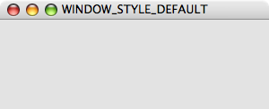
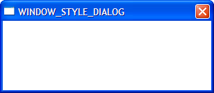
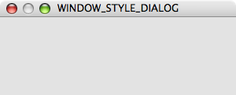
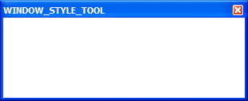
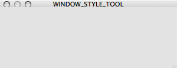

Windowing¶
A Window in pyglet corresponds to a top-level window provided by the
operating system. Windows can be floating (overlapped with other application
windows) or fullscreen.
Creating a window¶
If the Window constructor is called with no
arguments, defaults will be assumed for all parameters:
window = pyglet.window.Window()
The default parameters used are:
- The window will have a size of 640x480, and not be resizable.
- A default context will be created using template config described in OpenGL configuration options.
- The window caption will be the name of the executing Python script (i.e.,
sys.argv[0]).
Windows are visible as soon as they are created, unless you give the
visible=False argument to the constructor. The following
example shows how to create and display a window in two steps:
window = pyglet.window.Window(visible=False)
# ... perform some additional initialisation
window.set_visible()
Context configuration¶
The context of a window cannot be changed once created. There are several ways to control the context that is created:
Supply an already-created
Contextusing thecontextargument:context = config.create_context(share) window = pyglet.window.Window(context=context)
Supply a complete
Configobtained from aScreenusing theconfigargument. The context will be created from this config and will share object space with the most recently created existing context:config = screen.get_best_config(template) window = pyglet.window.Window(config=config)
Supply a template
Configusing theconfigargument. The context will use the best config obtained from the default screen of the default display:config = gl.Config(double_buffer=True) window = pyglet.window.Window(config=config)
Specify a
Screenusing thescreenargument. The context will use a config created from default template configuration and this screen:screen = display.get_screens()[screen_number] window = pyglet.window.Window(screen=screen)
Specify a
Displayusing thedisplayargument. The default screen on this display will be used to obtain a context using the default template configuration:display = platform.get_display(display_name) window = pyglet.window.Window(display=display)
If a template Config is given, a
Screen or Display may also
be specified; however any other combination of parameters overconstrains the
configuration and some parameters will be ignored.
Fullscreen windows¶
If the fullscreen=True argument is given to the window constructor, the
window will draw to an entire screen rather than a floating window. No window
border or controls will be shown, so you must ensure you provide some other
means to exit the application.
By default, the default screen on the default display will be used, however you can optionally specify another screen to use instead. For example, the following code creates a fullscreen window on the secondary screen:
screens = display.get_screens()
window = pyglet.window.Window(fullscreen=True, screen=screens[1])
There is no way to create a fullscreen window that spans more than one window (for example, if you wanted to create an immersive 3D environment across multiple monitors). Instead, you should create a separate fullscreen window for each screen and attach identical event handlers to all windows.
Windows can be toggled in and out of fullscreen mode with the
set_fullscreen()
method. For example, to return to windowed mode from fullscreen:
window.set_fullscreen(False)
The previous window size and location, if any, will attempt to be restored, however the operating system does not always permit this, and the window may have relocated.
Size and position¶
This section applies only to windows that are not fullscreen. Fullscreen windows always have the width and height of the screen they fill.
You can specify the size of a window as the first two arguments to the window constructor. In the following example, a window is created with a width of 1280 pixels and a height of 720 pixels:
window = pyglet.window.Window(1280, 720)
The “size” of a window refers to the drawable space within it, excluding any additional borders or title bar drawn by the operating system.
You can allow the user to resize your window by specifying resizable=True
in the constructor. If you do this, you may also want to handle the
on_resize() event:
window = pyglet.window.Window(resizable=True)
@window.event
def on_resize(width, height):
print 'The window was resized to %dx%d' % (width, height)
You can specify a minimum and maximum size that the window can be resized to
by the user with the set_minimum_size() and
set_maximum_size() methods:
window.set_minimum_size(320, 200)
window.set_maximum_size(1024, 768)
The window can also be resized programatically (even if the window is not
user-resizable) with the set_size() method:
window.set_size(1280, 720)
The window will initially be positioned by the operating system. Typically,
it will use its own algorithm to locate the window in a place that does not
block other application windows, or cascades with them. You can manually
adjust the position of the window using the
get_location() and
set_location() methods:
x, y = window.get_location()
window.set_location(x + 20, y + 20)
Note that unlike the usual coordinate system in pyglet, the window location is relative to the top-left corner of the desktop, as shown in the following diagram:
The position and size of the window relative to the desktop.
Appearance¶
Window style¶
Non-fullscreen windows can be created in one of four styles: default, dialog, tool or borderless. Examples of the appearances of each of these styles under Windows and Mac OS X 10.4 are shown below.
Style Windows Mac OS X WINDOW_STYLE_DEFAULT
 WINDOW_STYLE_DIALOG  WINDOW_STYLE_TOOL 
Non-resizable variants of these window styles may appear slightly different (for example, the maximize button will either be disabled or absent).
Besides the change in appearance, the window styles affect how the window behaves. For example, tool windows do not usually appear in the task bar and cannot receive keyboard focus. Dialog windows cannot be minimized. Selecting the appropriate window style for your windows means your application will behave correctly for the platform on which it is running, however that behaviour may not be consistent across Windows, Linux and Mac OS X.
The appearance and behaviour of windows in Linux will vary greatly depending on the distribution, window manager and user preferences.
Borderless windows (WINDOW_STYLE_BORDERLESS)
are not decorated by the operating system at all, and have no way to be resized
or moved around the desktop. These are useful for implementing splash screens
or custom window borders.
You can specify the style of the window in the Window
constructor. Once created, the window style cannot be altered:
window = pyglet.window.Window(style=window.Window.WINDOW_STYLE_DIALOG)
Caption¶
The window’s caption appears in its title bar and task bar icon (on Windows
and some Linux window managers). You can set the caption during window
creation or at any later time using the
set_caption() method:
window = pyglet.window.Window(caption='Initial caption')
window.set_caption('A different caption')
Icon¶
The window icon appears in the title bar and task bar icon on Windows and Linux, and in the dock icon on Mac OS X. Dialog and tool windows do not necessarily show their icon.
Windows, Mac OS X and the Linux window managers each have their own preferred icon sizes:
- Windows XP
- A 16x16 icon for the title bar and task bar.
- A 32x32 icon for the Alt+Tab switcher.
- Mac OS X
- Any number of icons of resolutions 16x16, 24x24, 32x32, 48x48, 72x72 and 128x128. The actual image displayed will be interpolated to the correct size from those provided.
- Linux
- No constraints, however most window managers will use a 16x16 and a 32x32 icon in the same way as Windows XP.
The set_icon() method allows you to set any number of images as the
icon. pyglet will select the most appropriate ones to use and apply them to
the window. If an alternate size is required but not provided, pyglet will
scale the image to the correct size using a simple interpolation algorithm.
The following example provides both a 16x16 and a 32x32 image as the window icon:
window = pyglet.window.Window()
icon1 = pyglet.image.load('16x16.png')
icon2 = pyglet.image.load('32x32.png')
window.set_icon(icon1, icon2)
You can use images in any format supported by pyglet, however it is recommended to use a format that supports alpha transparency such as PNG. Windows .ico files are supported only on Windows, so their use is discouraged. Mac OS X .icons files are not supported at all.
Note that the icon that you set at runtime need not have anything to do with the application icon, which must be encoded specially in the application binary (see Self-contained executables).
Visibility¶
Windows have several states of visibility. Already shown is the
visible property which shows or hides the window.
Windows can be minimized, which is equivalent to hiding them except that they
still appear on the taskbar (or are minimised to the dock, on OS X). The user
can minimize a window by clicking the appropriate button in the title bar.
You can also programmatically minimize a window using the
minimize method
(there is also a corresponding maximize method).
When a window is made visible the on_show() event is triggered. When it is
hidden the on_hide() event is triggered. On Windows and Linux these events
will only occur when you manually change the visibility of the window or when
the window is minimized or restored. On Mac OS X the user can also hide or
show the window (affecting visibility) using the Command+H shortcut.
Subclassing Window¶
A useful pattern in pyglet is to subclass Window for
each type of window you will display, or as your main application class. There
are several benefits:
- You can load font and other resources from the constructor, ensuring the OpenGL context has already been created.
- You can add event handlers simply be defining them on the class. The
on_resize()event will be called as soon as the window is created (this doesn’t usually happen, as you must create the window before you can attach event handlers). - There is reduced need for global variables, as you can maintain application state on the window.
The following example shows the same “Hello World” application as presented
in Writing a pyglet application, using a subclass of Window:
class HelloWorldWindow(pyglet.window.Window):
def __init__(self):
super(HelloWorldWindow, self).__init__()
self.label = pyglet.text.Label('Hello, world!')
def on_draw(self):
self.clear()
self.label.draw()
if __name__ == '__main__':
window = HelloWorldWindow()
pyglet.app.run()
This example program is located in
examples/programming_guide/window_subclass.py.
Windows and OpenGL contexts¶
Every window in pyglet has an associated OpenGL context. Specifying the configuration of this context has already been covered in Creating a window. Drawing into the OpenGL context is the only way to draw into the window’s client area.
Double-buffering¶
If the window is double-buffered (i.e., the configuration specified
double_buffer=True, the default), OpenGL commands are applied to a hidden
back buffer. This back buffer can be copied to the window using the flip
method. If you are using the standard pyglet.app.run or
pyglet.app.EventLoop event loop, this is taken care of automatically after
each on_draw() event.
If the window is not double-buffered, the flip()
operation is unnecessary, and you should remember only to call
pyglet.gl.glFlush() to ensure buffered commands are executed.
Vertical retrace synchronisation¶
Double-buffering eliminates one cause of flickering: the user is unable to see the image as it painted, only the final rendering. However, it does introduce another source of flicker known as “tearing”.
Tearing becomes apparent when displaying fast-moving objects in an animation. The buffer flip occurs while the video display is still reading data from the framebuffer, causing the top half of the display to show the previous frame while the bottom half shows the updated frame. If you are updating the framebuffer particularly quickly you may notice three or more such “tears” in the display.
pyglet provides a way to avoid tearing by synchronising buffer flips to the
video refresh rate. This is enabled by default, but can be set or unset
manually at any time with the vsync (vertical
retrace synchronisation)
property. A window is created with vsync initially disabled in the following
example:
window = pyglet.window.Window(vsync=False)
It is usually desirable to leave vsync enabled, as it results in flicker-free animation. There are some use-cases where you may want to disable it, for example:
- Profiling an application. Measuring the time taken to perform an operation will be affected by the time spent waiting for the video device to refresh, which can throw off results. You should disable vsync if you are measuring the performance of your application.
- If you cannot afford for your application to block. If your application run loop needs to quickly poll a hardware device, for example, you may want to avoid blocking with vsync.
Note that some older video cards do not support the required extensions to implement vsync; this will appear as a warning on the console but is otherwise ignored.